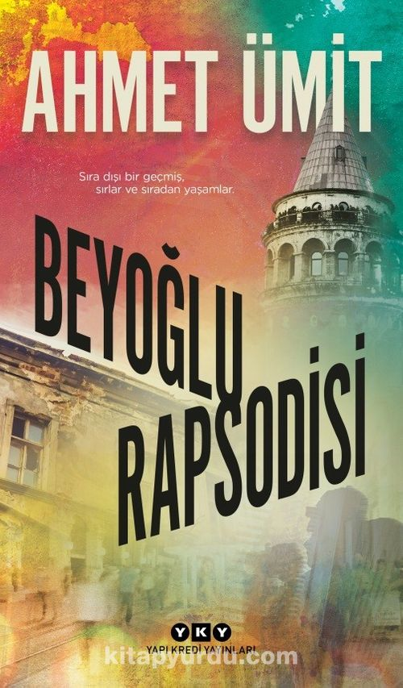
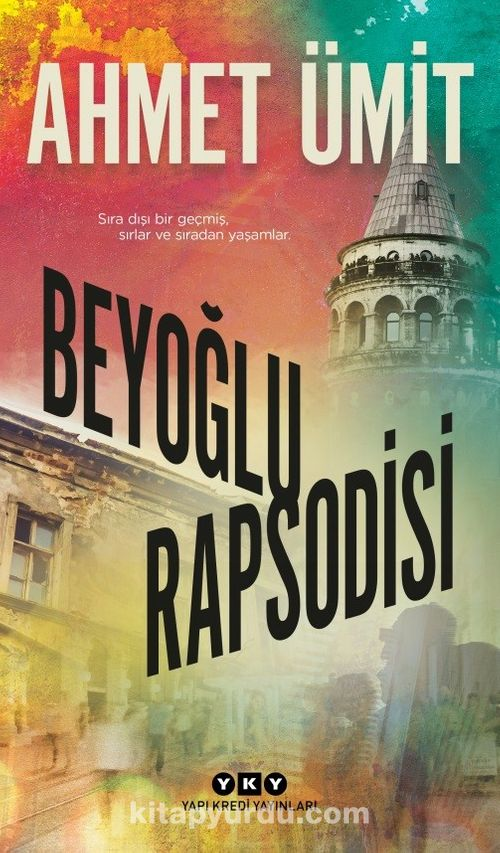
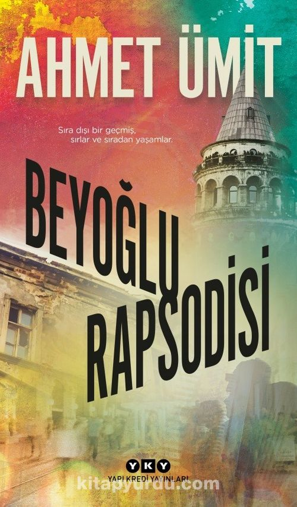

En Sevdiğim Kitaplar
 

Merhaba! Ben Özlem İkiz, İstanbul'un güzel semtlerinden Pendik'te hayatıma devam eden biriyim. Kartal'da doğup büyüdüm, bu şehre ve sokaklarına olan bağım bir başkadır. Lise yıllarıma kadar İstanbul'un kalabalık ve enerjik atmosferinde okudum, şehrin tüm renklerini ve dokusunu içime sindirdim. Şu anda Afyon Kocatepe Üniversitesi'nde bilgisayar mühendisliği öğrencisiyim. Bu alanda kariyer yapmak için kendimi geliştiriyor, bilgi ve becerilerimi artırıyorum. Bilgisayarlarla içli dışlı olmam, teknolojiye olan ilgimle birleşince bu alanda ilerlemek benim için kaçınılmaz bir seçenek oldu. Aslen Samsun'lu olmamın verdiği gururla, farklı coğrafyalardaki kültürel zenginliklere de ilgi duyarım. Yeni yerler keşfetmek, insanlarla tanışmak benim için bir tutku haline geldi. Farklı şehirlerin ve kültürlerin izlerini sürmek, yaşadığım deneyimlerden keyif almamı sağlar. Boş zamanlarımda ise dizi ve film izlemek benim için büyük bir zevktir. Farklı hikayelerin ve karakterlerin dünyalarına dalıp, yeni şeyler öğrenmek, beni her zaman heyecanlandırır. Kitap okumak da benim için bir tutku. Sayfalar arasında kaybolmak, farklı dünyalara yolculuk etmek, benim için vazgeçilmez bir keyiftir. Hayatı dolu dolu yaşamayı seven, meraklı, keşfetmeyi seven biriyim. Yeniliklere açık olmak, sürekli öğrenmek ve gelişmek benim için önemlidir. Her anı dolu dolu yaşamak ve bu dünyada iz bırakmak en büyük arzularımdan biridir.

Bana ulaşmak için aşağıdaki bilgileri kullanabilirsiniz: